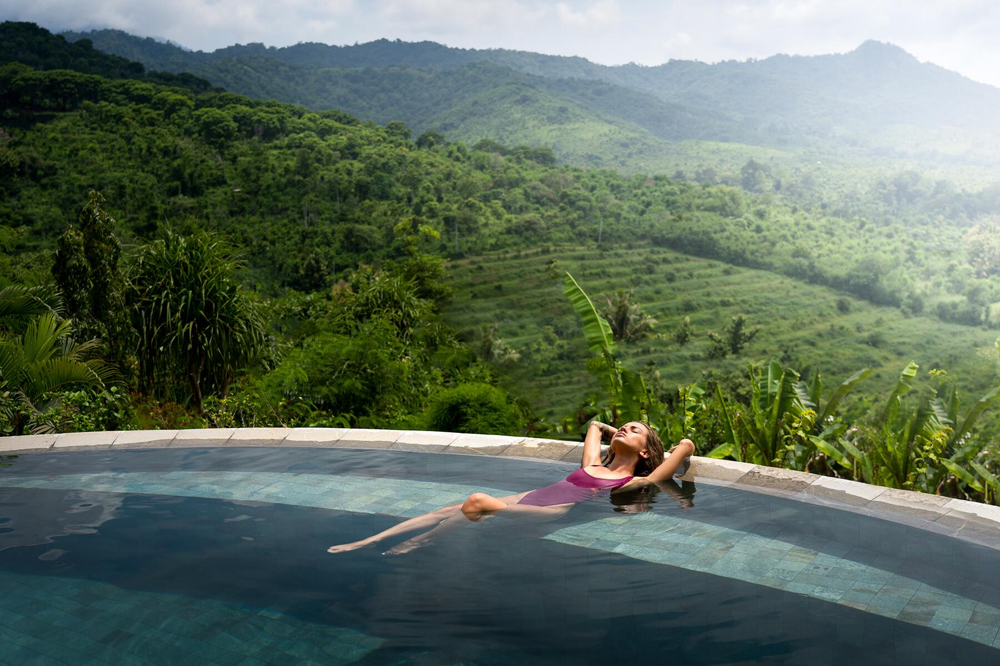

Me and My Travelling Buddies
My first job out of college was at a healthcare software company called Epic. I owe a lot of things to Epic, but the two things that I appreciate most are the opportunities it gave me to see the world and a fabulous group of friends that I could see the world with. I met Taylor, Thomas, and Ben during my first project assignment at Epic. We were all on a team that traveled regularly to the suburbs of Philadelphia and became quite close through all the trials and tribulations that came with that. About once or twice a year, our little foursome would plan a trip, partially for a mental break and partially to cash in on those airline and hotel loyalty points we had accumulated!
Getting There
In the spring of 2019, we decided to go to Bali. We'd heard so much about it from our friends that had visited and the pictures they showed us just looked irresistible, so we booked our tickets. The first flight would be 16 hours long, across the International Date Line, and would take us through Seoul, South Korea. Once in Seoul, we'd board our second flight--only 8 hours this time--to Bali. Due to the length of the air travel and the fact that we were flying across the world, we ended up landing around 2 in the morning. You'd think that Customs would be a breeze at that time. Nope! That's the time that everyone lands in Bali, so we then had to spend about 2 hours working our way through the Customs line. In an open air airport. In a tropical jungle climate. Woo! We were very much ready for a bed and some air conditioning by the time we finished up.
Being in Bali
Finally, once we were cleared to enter the country and located our shuttle driver, we were off! We motored our way through the darkened, quiet streets of Bali and eventually arrived at the resort. Due to our hotel loyalty points, we found out during Check-In that we'd qualified for a bunch of extra perks including some spa services and a beautiful fruit platter. We didn't know it yet, but that set the tone for our trip. We had excellent luck during the entire 10 day trip. We toured temples, visited beaches and volcanoes, explored local artisanal shops for metalwork and traditional fabric, and ate at delicious local restaurants.
Of course our time flew by, and by the end we weren't even close to ready to leave our little island oasis, but the four of us know that we'll be back some day. Despite the island's small size, there's so much left to explore and soak up. I can't wait to return with my travelling buddies some day in the not-too-distant future.
